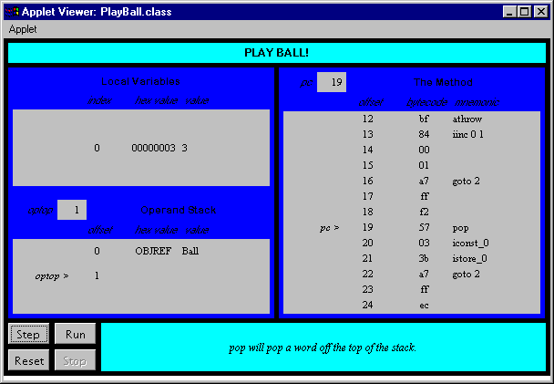

This chapter shows how exceptions are implemented in bytecodes. It describes the instruction for throwing an exception explicitly, explains exception tables, and shows how catch clauses work.
Accompanying this chapter on the CD-ROM is an applet that interactively illustrates the material presented in the chapter. The applet, named Play Ball! , simulates the Java Virtual Machine executing a method that throws and catches exceptions. At the end of this chapter, you will find a description of this applet and the bytecodes it executes.
Throwing and Catching Exceptions
Exceptions allow you to smoothly handle unexpected conditions that occur as your programs run. To demonstrate the way the Java Virtual Machine handles exceptions, consider a class named NitPickyMath that provides methods that perform addition, subtraction, multiplication, division, and remainder on integers. NitPickyMath performs these mathematical operations the same as the normal operations offered by Java's + , - , * , / , and % operators, except the methods in NitPickyMath throw checked exceptions on overflow, underflow, and divide-by-zero conditions. The Java Virtual Machine will throw an ArithmeticException on an integer divide-by-zero, but will not throw any exceptions on overflow and underflow. The exceptions thrown by the methods of NitPickyMath are defined as follows :
begin// On CD-ROM in file except/ex1/OverflowException.javaclass OverflowException extends Exception {
}
// On CD-ROM in file except/ex1/UnderflowException.javaclass UnderflowException extends Exception {
}
// On CD-ROM in file except/ex1/DivideByZeroException.javaclass DivideByZeroException extends Exception {
}
end
A simple method that catches and throws exceptions is the remainder() method of class NitPickyMath :
begin// On CD-ROM in file except/ex1/NitpickyMath.javaInteger.MAX_VALUE) {class NitpickyMath {
static int add(int a, int b)
throws OverflowException, UnderflowException {
long longA = (long) a;
long longB = (long) b;
long result = a + b;
if (result
throw new OverflowException();
}
if (result < Integer.MIN_VALUE) {
throw new UnderflowException();
}
return (int) result;
}
static int subtract(int minuend, int subtrahend)
throws OverflowException, UnderflowException {
long longMinuend = (long) minuend;
long longSubtrahend = (long) subtrahend;
long result = longMinuend - longSubtrahend;
if (result Integer.MAX_VALUE) {
throw new OverflowException();
}
if (result < Integer.MIN_VALUE) {
throw new UnderflowException();
}
return (int) result;
}
static int multiply(int a, int b)
throws OverflowException, UnderflowException {
long longA = (long) a;
long longB = (long) b;
long result = a * b;
if (result Integer.MAX_VALUE) {
throw new OverflowException();
}
if (result < Integer.MIN_VALUE) {
throw new UnderflowException();
}
return (int) result;
}
static int divide(int dividend, int divisor)
throws OverflowException, DivideByZeroException {
// Overflow can occur in division when dividing the
// negative integer of the largest possible magnitude
// (Integer.MIN_VALUE) by -1, because this would just flip
// the sign, but there is no way to represent that number
// in an int.
if ((dividend == Integer.MIN_VALUE) && (divisor == -1)) {
throw new OverflowException();
}
try {
return dividend / divisor;
}
catch (ArithmeticException e) {
throw new DivideByZeroException();
}
}
static int remainder(int dividend, int divisor)
throws OverflowException, DivideByZeroException {
// Overflow can occur in division when dividing the
// negative integer of the largest possible magnitude
// (Integer.MIN_VALUE) by -1, because this would just flip
// the sign, but there is no way to represent that number
// in an int.
if ((dividend == Integer.MIN_VALUE) && (divisor == -1)) {
throw new OverflowException();
}
try {
return dividend % divisor;
}
catch (ArithmeticException e) {
throw new DivideByZeroException();
}
}
}
end
The remainder() method simply performs the remainder operation ( % ) upon the two ints passed as arguments. The remainder operation throws an ArithmeticException if the divisor of the remainder operation is a zero. This method catches this ArithmeticException and throws a DivideByZeroException .
The difference between these two exceptions is that DivideByZeroException is checked and ArithmeticException is unchecked . Because the ArithmeticException is unchecked, a method need not declare this exception in a throws clause even though it might throw it. Any exceptions that are subclasses of either Error or RuntimeException are unchecked. ( ArithmeticException is a subclass of RuntimeException .) By catching ArithmeticException and then throwing DivideByZeroException , the remainder() method forces its clients to deal with the possibility of a divide-by-zero exception, either by catching it or declaring DivideByZeroException in their own throws clauses.
javac generates the following bytecode sequence for the remainder method:
begin// The main bytecode sequence for remainder():
0 iload_0 // Push local variable 0 (arg passed as dividend)
// Push the minimum integer value
1 ldc #1 <Integer -2147483648
// If the dividend isn't equal to the minimum integer,
// jump to the remainder calculation
3 if_icmpne 19
6 iload_1 // Push local variable 1 (arg passed as divisor)
// Push -1
7 iconst_m1
// If the divisor isn't equal to -1, jump
// to the remainder calculation
8 if_icmpne 19
// This is an overflow case, so throw an exception
// Create a new OverflowException, push reference to
// it onto the stack
11 new #4 <Class OverflowException
14 dup // Make a copy of the reference
// Pop one copy of the reference and invoke the <init>
// method of new OverflowException object
15 invokespecial #10 <Method OverflowException()
// Pop the other reference to the OverflowException
// and throw it
18 athrow
// Calculate the remainder
19 iload_0 // Push local variable 0 (arg passed as dividend)
20 iload_1 // Push local variable 1 (arg passed as divisor)
21 irem // Pop divisor; pop dividend; calculate, push remainder
22 ireturn // Return int on top of stack (the remainder)
// The bytecode sequence for the catch (ArithmeticException) clause:
23 pop // Pop the reference to the ArithmeticException
// because it isn't used by this catch clause.
24 new #2 <Class DivideByZeroException
// Create and push reference to new object of
// class DivideByZeroException.
27 dup // Duplicate the reference to the new object on the top
// of the stack because it must be both initialized
// and thrown. The initialization will consume
// the copy of the reference created by the dup.
28 invokespecial #9 <Method DivideByZeroException()
// Call the no-arg <init> method for the
// DivideByZeroException to initialize it. This
// instruction will pop the top reference to the object.
31 athrow // Pop the reference to a Throwable object, in this
// case the DivideByZeroException,
// and throw the exception.
end
The bytecode sequence of the remainder() method has two separate parts . The first part is the normal path of execution for the method. This part goes from pc offset zero through 22. The second part is the catch clause, which goes from pc offset 23 through 31.
The Exception Table
The irem instruction in the main bytecode sequence may throw an ArithmeticException . If this occurs, the Java Virtual Machine knows to jump to the bytecode sequence that implements the catch clause by looking up and finding the exception in a table. Each method that catches exceptions is associated with an exception table that is delivered in the class file along with the bytecode sequence of the method. The exception table has one entry for each exception that is caught by each try block. Each entry has four pieces of information:
the start point the end point the pc offset within the bytecode sequence to jump to a constant pool index of the exception class that is being caught. The exception table for the remainder() method of class NitPickyMath is shown below:
beginException table:from to target type
19 23 23 <Class java.lang.ArithmeticException
end
The above exception table indicates that from pc offset 19 through 22, inclusive, ArithmeticException is caught. The try block's endpoint value, listed in the table under the label "to", is always one more than the last pc offset for which the exception is caught. In this case the endpoint value is listed as 23, but the last pc offset for which the exception is caught is 22. This range, 19 to 22 inclusive, corresponds to the bytecode sequence that implements the code inside the try block of remainder() . The target listed in the table is the pc offset to jump to if an ArithmeticException is thrown between the pc offsets 19 and 22, inclusive.
If an exception is thrown during the execution of a method, the Java Virtual Machine searches through the exception table for a matching entry. An exception table entry matches if the current program counter is within the range specified by the entry, and if the exception class thrown is the exception class specified by the entry (or is a subclass of the specified exception class). The Java Virtual Machine searches through the exception table in the order in which the entries appear in the table. When the first match is found, the virtual machine sets the program counter to the new pc offset location and continues execution there. If no match is found, the virtual machine pops the current stack frame and rethrows the same exception. When the Java Virtual Machine pops the current stack frame, it effectively aborts execution of the current method and returns to the method that called this method. But instead of continuing execution normally in the previous method, it throws the same exception in that method, which causes the it to go through the same process of searching through the exception table of that method.
A Java programmer can throw an exception with a throw statement such as the one in the catch ( ArithmeticException ) clause of remainder() , where a DivideByZeroException is created and thrown. The bytecode that does the throwing is shown in Table 17-1:
Table 17-1. Throwing Exceptions
| Opcode | Operand(s) | Description |
athrow | (none) | pops Throwable object reference, throws the exception |
The athrow instruction pops the top word from the stack and expects it to be a reference to an object that is a subclass of Throwable (or Throwable itself). The exception thrown is of the type defined by the popped object reference.
Play Ball!: A Simulation
The Play Ball! Applet, shown in Figure 17-1, demonstrates a Java Virtual Machine executing a sequence of bytecodes. This applet is embedded in a web page on the CD-ROM in file applets/PlayBall.html . The bytecode sequence in the simulation was generated by javac for the playBall method of the class shown below:
begin// On CD-ROM in file except/ex2/Ball.javaclass Ball extends Exception {
}
// On CD-ROM in file except/ex2/Pitcher.javaclass Pitcher {
private static Ball ball = new Ball();
static void playBall() {
int i = 0;
for (;;) {
try {
if (i % 4 == 3) {
throw ball;
}
++i;
}
catch (Ball b) {
i = 0;
}
}
}
}
end
The bytecodes generated by javac for the playBall method are shown below:
begin// The main bytecode sequence for playBall():
0 iconst_0 // Push constant 0
1 istore_0 // Pop into local var 0: int i = 0;
// The try block starts here (see the
// exception table, below).
2 iload_0 // Push local var 0
3 iconst_4 // Push constant 4
4 irem // Calc remainder of top two operands
5 iconst_3 // Push constant 3
6 if_icmpne 13 // Jump if remainder not equal to 3:
// if (i % 4 == 3) {
// Push the static field at constant pool
// location #6, which is the Ball exception eager
// to be thrown
9 getstatic #6 <Field Ball ball
12 athrow // Heave it home: throw ball;
13 iinc 0 1 // Increment the int at local var 0 by 1: ++i;
// The try block ends here (see the
// exception table, below).
16 goto 2 // jump always back to 2: for (;;) {}
// The bytecode sequence for the catch (Ball) clause:
19 pop // Pop the exception reference because it is unused
20 iconst_0 // Push constant 0
21 istore_0 // Pop into local var 0: i = 0;
22 goto 2 // Jump always back to 2: for (;;) {}
Exception table:
from to target type
2 16 19 <Class Ball
end
The playball() method loops forever. Every fourth pass through the loop, playball() throws a Ball and catches it, just because it's fun. Since the try block and the catch clause are both within the endless while loop, the fun never stops. The local variable i starts at 0 and increments each pass through the loop. When the if statement is true , which happens every time i is equal to 3, the Ball exception is thrown.
The Java Virtual Machine checks the exception table and discovers that there is indeed an applicable entry. The entry's valid range is from 2 to 15, inclusive, and the exception is thrown at pc offset 12. The exception caught by the entry is of class Ball , and the exception thrown is of class Ball . Given this perfect match, the virtual machine pushes the thrown exception object onto the stack, and continues execution at pc offset 19. The catch clause, which starts at offset 19, merely resets int i to 0, and the loop starts over.
To drive the Play Ball! simulation, use the Step, Reset, Run, and Stop buttons . Each time you press the Step button, the simulator will execute the instruction pointed to by the pc register. If you press the Run button, the simulation will continue with no further coaxing on your part until you press the Stop button. To start the simulation over, press the Reset button. For each step of the simulation, a panel at the bottom of the applet contains an explanation of what the next instruction will do. Happy clicking.

On the CD-ROM
The CD-ROM contains the source code examples from this chapter in the except directory. The Play Ball! applet is contained in a web page on the CD-ROM in file applets/PlayBall.html . The source code for this applet is found alongside its class files, in the applets/JVMSimulators and applets/JVMSimulators/COM/artima/jvmsim directories.
The Resources Page
For more information about the material presented in this chapter, visit the resources page: http://www.artima.com/insidejvm/except.html .